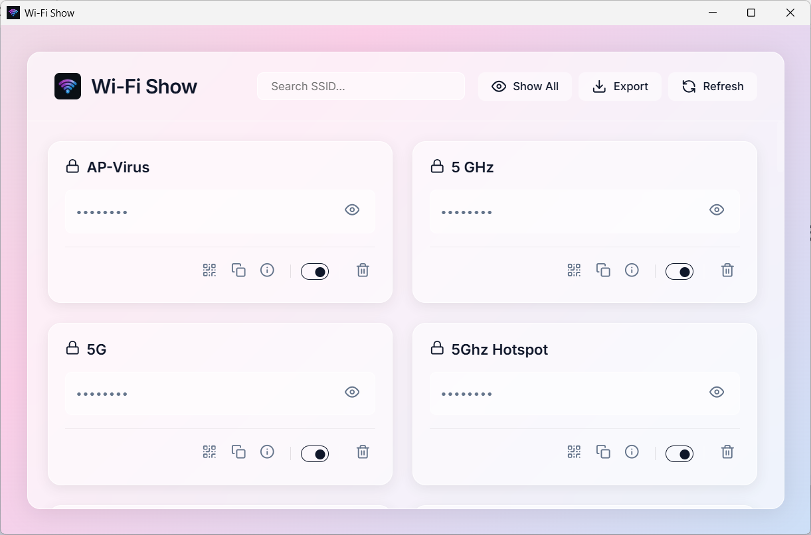

Manage Your Networks
Like A Pro
Forgot your Wi-Fi password? Need to share it with guests? Wi-Fi Show lets you instantly view, share, and manage all your saved network profiles in one beautiful interface.
Download for Windows
Recover Passwords
Instantly reveal the passwords for every Wi-Fi network your computer has ever connected to, so you never lose access again.
Guest Sharing via QR
Stop dictating long, complicated passwords. Generate a scannable QR code in one click so your guests can join the Wi-Fi instantly.
Control Auto-Connect
Take charge of your network behavior. Easily toggle whether your computer should automatically connect to specific networks when in range.
Export to CSV
Back up all your Wi-Fi credentials in seconds. Export your entire network list to a secure CSV file for safekeeping or migration.
Clean up Clutter
Easily forget and permanently delete old networks you no longer use, keeping your connection list clean and organized.
Stunning Design
Enjoy a premium, frosted-glass interface with beautiful animations that looks and feels like a native part of modern Windows.